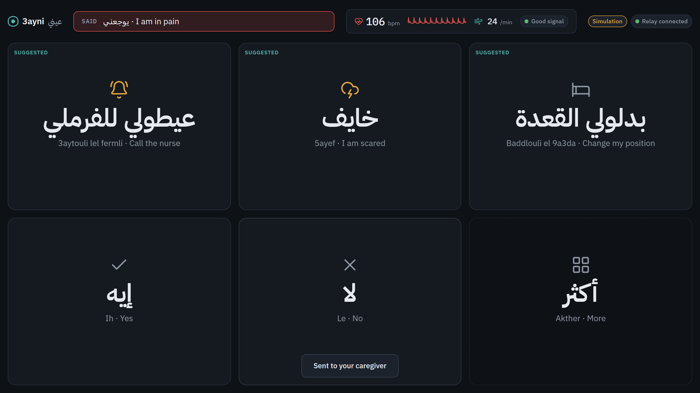
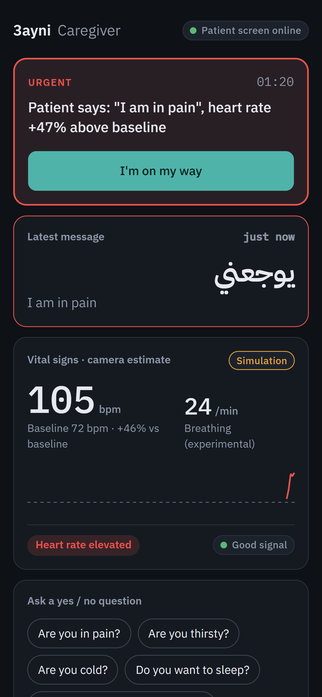

3AYNI
عيني
A voice and a pulse monitor for patients who cannot speak or move
- Patient
- Am Hédi, 64
- Condition
- After a stroke
- Consciousness
- Awake
- Speech
- None
- Movement
- None
- Communication
- Blinking only
- Distress channel
- None
- Awake and aware, but unable to speak or move
- After a stroke, with ALS, or on a breathing tube
- Relatives guess from blinks
- Eye-gaze devices cost thousands of dinars
- Silent distress goes unnoticed
Our solution
He looks at a tile; it is spoken in Darija
The same camera reads his heart rate
Pain plus a racing heart reaches the nurse
How it works
Films the face, on the laptop only
Tracks the eyes and 478 points
The gaze selects one tile
Skin colour reveals the heartbeat
Combine words and heart rate
The nurse gets message and alert
Live demo


Purposeful AI
Tests and validation
fewer selections per message
1.89 instead of 3.00
heart rate on test signals
52 to 130 bpm, flickering light
automated tests passing
gaze, pulse, alerts, relay
Simulated conversations and synthetic signals. Next: a hospital pilot against a pulse oximeter.
Responsible AI
Processed in the browser, never stored or sent
Phones need a random code shown at the bedside
A weak signal shows a dash and pauses monitoring
Built-in logger to test skin tones and lighting
Impact and next steps
His eyes speak. His heart is heard.
Questions and discussion are welcome